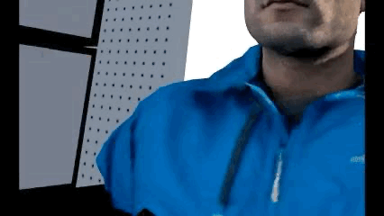
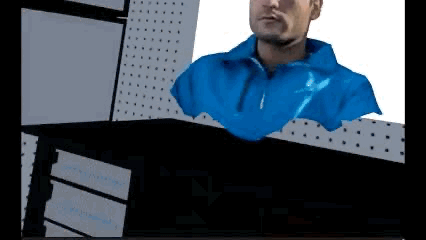

VR Hand Interative Deformation Project
Team: 31
Names: Yun Chung Chang, Jiashen(Jason) Du, Panfeng(Gavin) Jiang, Zitong (Peter) HuLink to webpage: https://zx40224617.github.io/CS184_Final_Deliverables/
Link to GitHub repository: Final Deliverables Website Our Code Base (switch to master branch if you see nothing)
Link to Slides: https://docs.google.com/presentation/d/1q-nhmrn9E7Ki5GwHW6Tn03XHFC5PPzgYxx3Citovl6E/edit?usp=sharing
Link to Videos: https://drive.google.com/file/d/1Zw4CIiLIGkhweLPhIh0miRUF3K-n1QF2/view?usp=drive_link
Link to Proposal: https://zx40224617.github.io/CS184FinalProposal/
Abstract
This project is inspired by CS184 Project 4 about physical simulation. We aims to develop a real-time, interactive mesh deformation system for virtual reality environments using Unity and Meta Quest 3. By enhancing immersion through dynamic, responsive mesh modifications, we seek to explore novel ways users can interact with and manipulate virtual objects directly via hand tracking or controller inputs. From the baseline, we improve the physical simulation by applying TBD for a more realistic objects deformation. We also replace the original mesh with a customized mesh and rewrite the code for multi-objects interactions in the same scene. We also build an immersive scene for better experience.Technical Approach
We implement custom Shader-Based Deformation: Leverages GPU-powered shaders to compute and render mesh deformations at high performance without modifying the underlying mesh data on the CPU.GPU: Compute Buffer
In typical physics simulation, unlike in project 4, it usually involve a much more complex mesh that contains huge amounts of verticies. In this case, we will need to populate a buffer to hold the vertex information including position and velocities on the GPU using Compute Buffers. It is simply a memory container that the Compute Shader read and write to. This is much more efficient since we can now compute parallely on the GPU without relying on CPU for dealing with large amount of data.To utilize compute buffer, we need to know how much storage that we need exactly. In our case, for each Vertex struct, there are 8 floats including position in 3 different axis, velocity in 3 different axis, and uv. So the total memory that we need will ended up being
vertex_number * size_of_float * 8
Deformation in Compute Shader
Because we already have a per-vertex running program in compute shader, we are able to do vertices movements in the unity environment. In Modifymesh.compute, we are using similar modification only using the approximation of a force, which is just some complicated and restricted variables controlling the speed / displacement of the vertices movements. There are multiple restriction terms we are using to achieve better deformation simulation:_distanceBegin; _distanceEnd; _pushforce; _elasticity; _drag;
_maxOffset; _stiffFalloff; _maxVelocity; _velocityBlend; _handEnabled;
We will list and explain our "regularization" terms that you can change
down below.
| Parameter | Purpose & Effect | Typical Range we determined when tuning |
|---|---|---|
_distanceBegin |
Outer radius where hand influence starts; farther ⇒ easier to press. When the distance from a vertex to a hand is ≤ _distanceBegin, the push force starts to grow from 0. Sets how far you can be and still touch the object. | 0.010 – 0.030 m |
_distanceEnd |
Inner radius where push force reaches full strength. At distance ≤ _distanceEnd the push force reaches its full magnitude. Think of it as the “core” collision radius. Smaller values make the force spike only when the hand is almost touching. |
0.01 – 0.08 m (must be < _distanceBegin)
|
_pushforce |
Scalar impulse multiplier; higher ⇒ deeper dents. Too high may cause instability or penetrations. | 0.1 – 1 (plush) |
_elasticity |
Spring-like return force toward bind pose; controls rebound speed. | Increase for snappy rebound; decrease for slow “memory-foam” return. Excessive values require higher _drag or _maxVelocity clamping. |
_drag |
Per-frame damping on velocity; lower ⇒ softer, higher ⇒ bouncy. | 0.80 – 0.97 |
_maxOffset |
Maximum allowed displacement from initial position (safety clamp). | 0.01 – 0.05 m |
_stiffFalloff |
Exponent shaping the fall-in curve; >1 stiff, <1 soft. | 0.3 – 3.0 |
_maxVelocity |
Hard cap on per-vertex speed; prevents numerical explosions. | Keep low for delicate cloth, higher for rigid rubber. |
_velocityBlend |
Mix between positional push and hand-velocity push (0 → pos only, 1 → vel only). Lets you decide whether a quick slap matters more than static penetration. | 0 – 1 (0.5–0.7 feels natural) |
_handEnabled |
Just for debug use. | 0 = off, 1 = on |
Eye-watering tips if you want to tweak your objects to the desired "feel".
Spatial bounds (_maxOffset, _distanceBegin, _distanceEnd) keep vertices inside a safe range. Energy control (_pushforce, _elasticity, _drag, _maxVelocity) ensures impulses don’t explode numerically and that energy eventually dissipates. Force-shaping curves (_stiffFalloff, _velocityBlend) smooth discontinuities that could otherwise create sudden big tearings or jitter. Tweak these in pairs: If you raise _pushforce, you almost always need a higher _drag or a lower _maxVelocity. Decreasing _distanceEnd without adjusting _stiffFalloff can make forces too peaky; raise the falloff exponent to compensate. Large _elasticity + low _drag + high _maxOffset is the recipe for “spaghetti bear”—use clamps wisely.Rendering
After the verticies have be altered, the compute shader are responsible for rendering that reflects the changes. In the baseline project, there are 2 differnet methods that are implemented, but we are focusing on the one that we ended up using here, which is DrawProcedural.In order to implement DrawProcedural, we need to turn off the MeshRenderer whenever this method is selected. We first need to initiliaze a Structured Buffer and bind it on the CPU side in the vertex shader. So we are bascially just reading from the Compute Shader to access the position and velocity after deformation. For sampling, we can use the VertexID supported in Unity since the Structured Buffer has the same order as the vertex buffer.
Bur for DrawProcedural, we need another Buffer called Index Buffer, which we simply just copy the triangles of the mesh into a Graphics Buffer that allows us to draw the traingles based on the deformed verticies as we already read as mentioned above.
Hand Interaction
The idea here is really easy, we first calculate the distance between verticies and hand using the positions. and base on distance, apply differnt level of pusing force using HLSL built in functions smoothstep(). Also, since we only want pushing force, we calculate the dot product of the hand moving direction and the vertex. Using the HLSL built in function saturate() to clamp out negtaive values so that there onlt force apply when the vertex is relatively in front of the hand.Results
Result for Soft Object Deformation

|

|
Comparison between our implementation and baseline implementation
|

|
|

|
References
- Oculus Quest Mesh Deformation with Compute Shaders in Unity
- CS184 Project 4
- Past Projet: CrushFX: Soft-Body Compression & Mesh Deformation